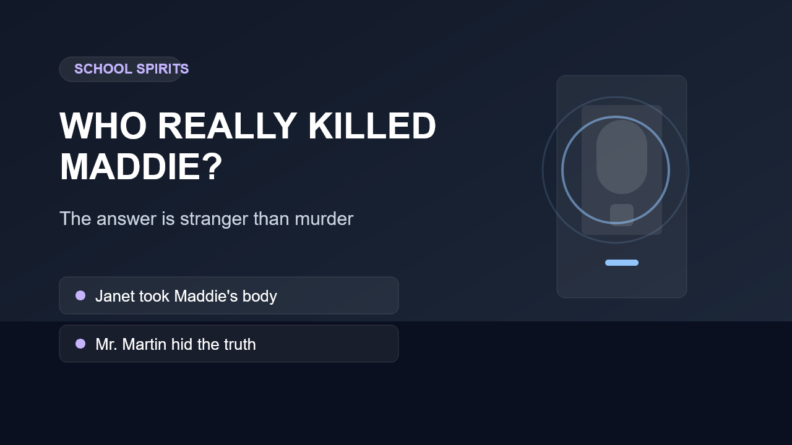

That framing is deliberate, and it is the trap both the audience and the characters fall into.
Spoilers ahead
The first time I watched School Spirits, I kept asking the wrong question. That is exactly why the reveal hit so hard.
The show wants you to play detective. It gives you suspects, grief, lies, and the familiar shape of a murder mystery. Then it pulls the floor out. Maddie’s story is not really about a neat killer reveal. It is about possession, stolen identity, and a much sadder kind of loss.

The real crisis is possession and displacement, not a tidy killer standing in the corner waiting to be named.
That is what makes the answer feel so strange. It is not cleaner than murder. It is messier.
Why the answer lands emotionally instead of just cleverly
What stayed with me about the twist was not only that it was surprising. It was how sad it made the whole story feel in retrospect. Maddie was never just a ghost trying to identify the person who killed her. She was a girl cut off from her own body, her own future, and her own voice while everyone around her chased the wrong explanation.
That is why simple summary lines about “who killed Maddie” usually feel thinner than the show itself. They flatten the pain into a trivia answer. The real answer is more uncomfortable: there is blame, there is betrayal, and there is enormous harm, but the mystery was built on a false question from the start.